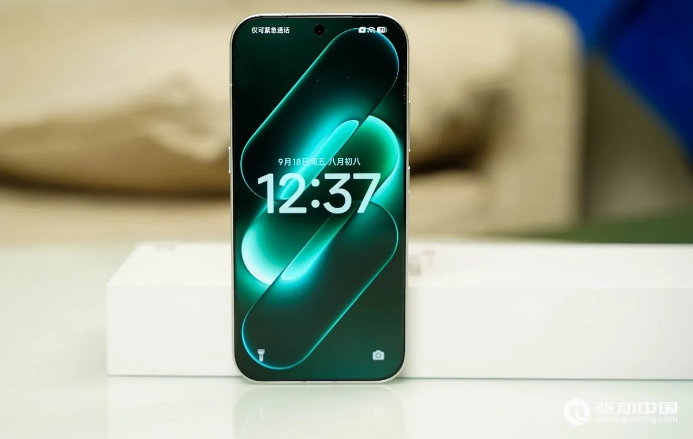
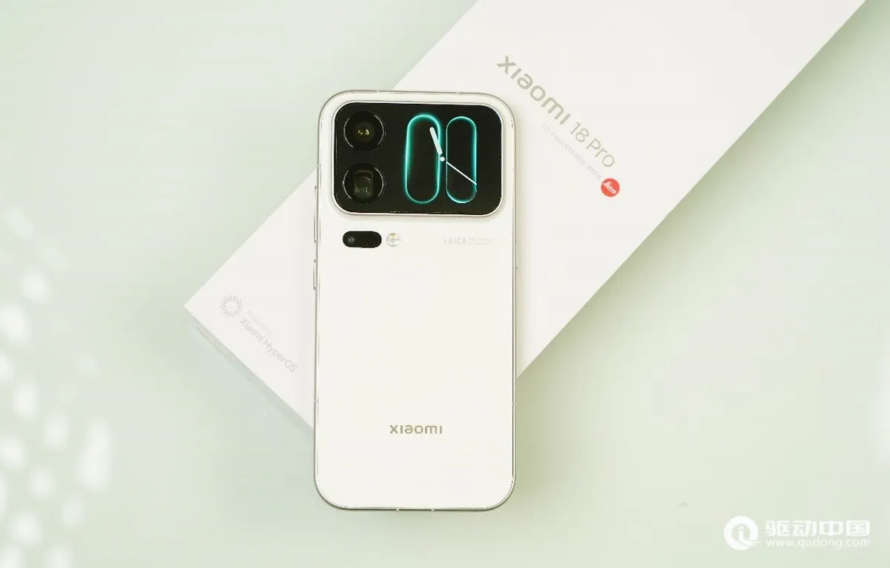
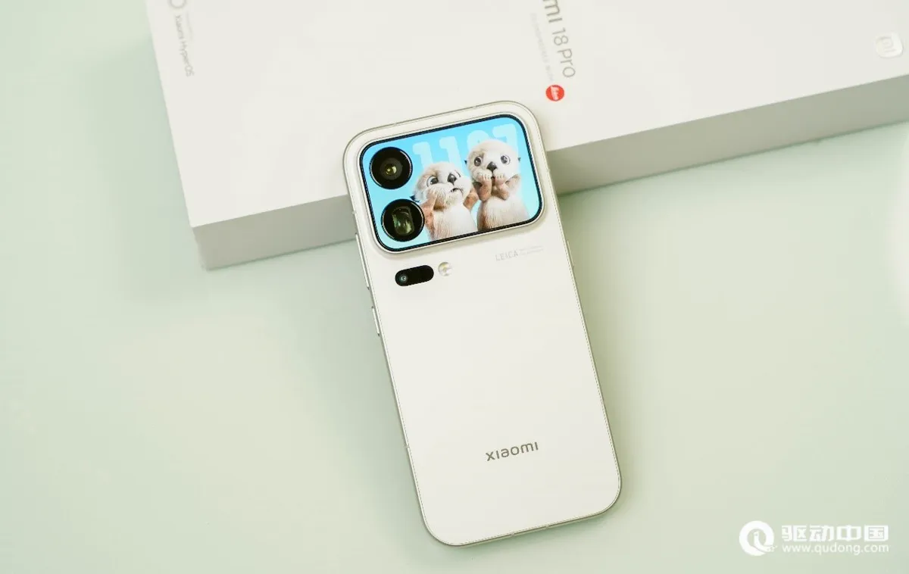
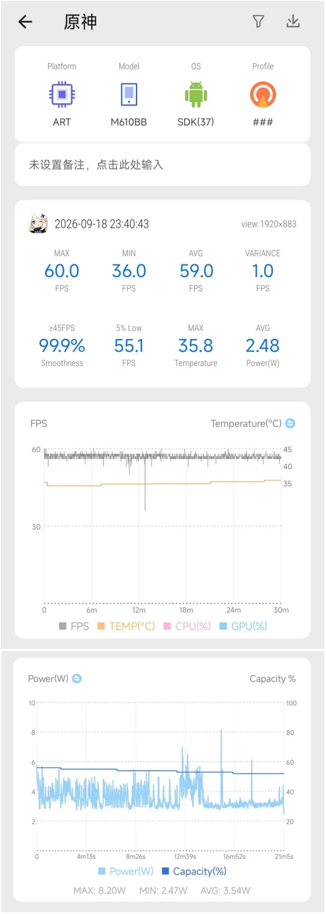
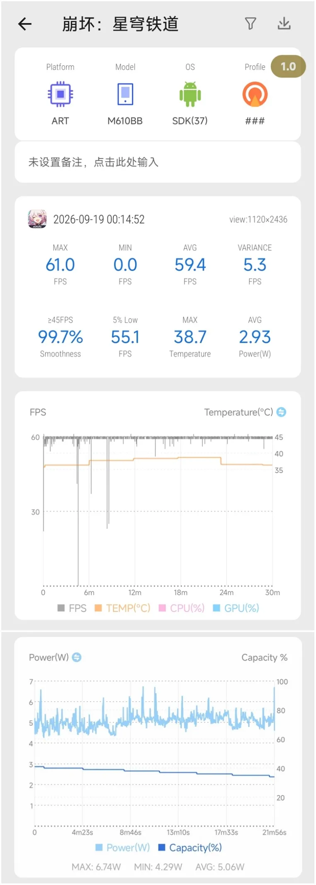
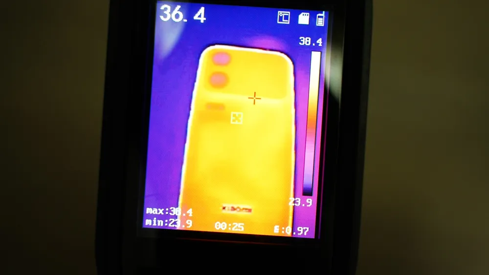
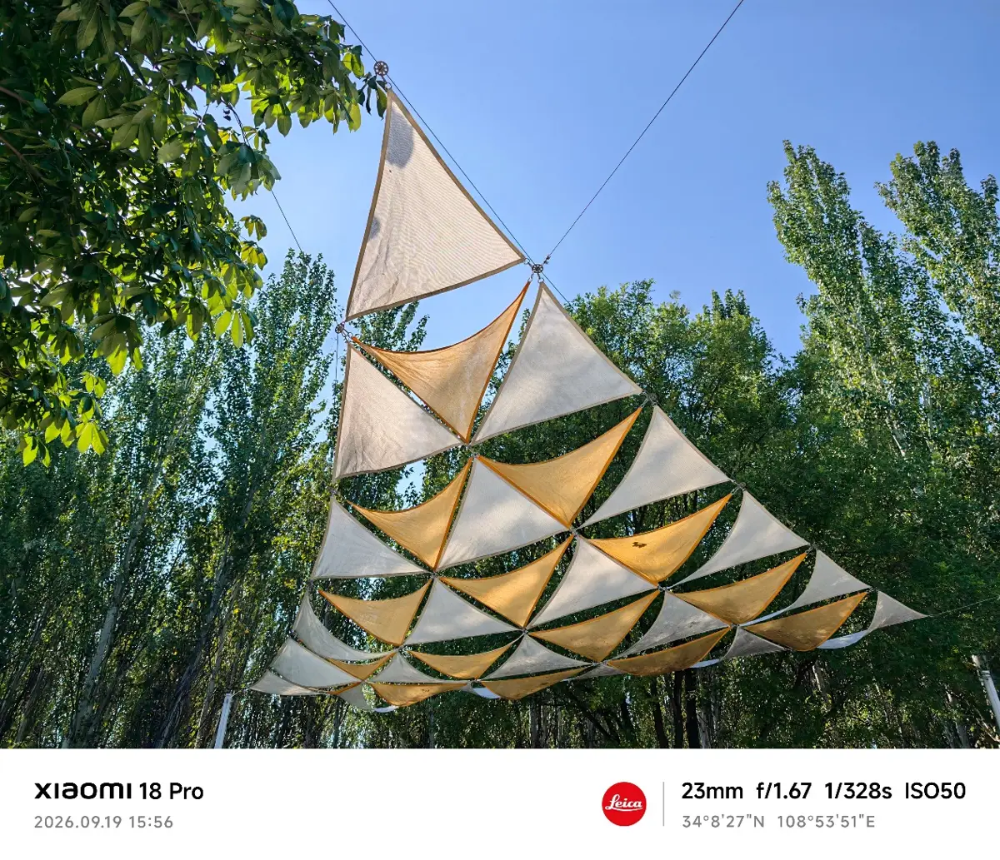
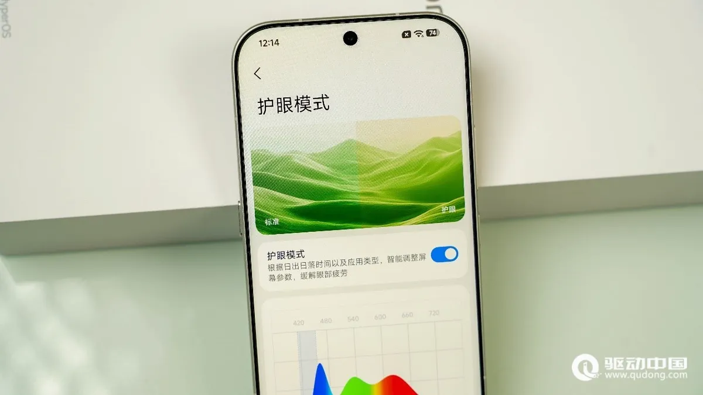
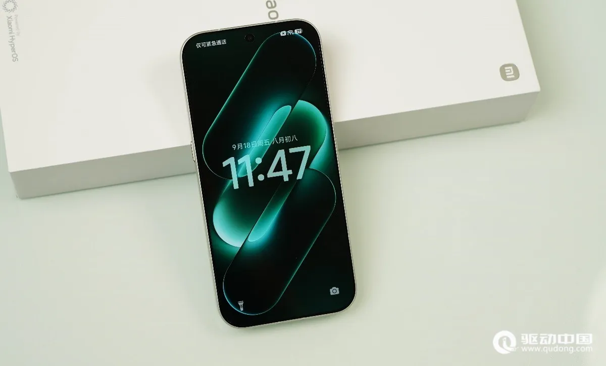

تقنية6 دقائق
شاومي 18 برو: هاتف رائد بحجم 6.4 بوصة وبطارية 7000 مللي أمبير، والحرارة والشاشة محل خلاف
مقدمة
Xiaomi 18 Pro هو الشقيق الأصغر في سلسلة شاومي 18 برو. أُطلق في الصين يوم 23 سبتمبر 2026 مع النسخة Max، بسعر 5,999 يوان لنسخة 12+256 جيجابايت، وهذا يطابق جدول الأسعار المعتمد. وتشير منشورات صينية إلى أن السعر بعد الدعم الحكومي يصل إلى 5,499 يوان.
الفرق الجوهري عن النسخة Max هو المعالج. يأتي 18 Pro بمعالج Snapdragon 8 Elite Gen 6 العادي، لا النسخة Extreme. وقد أكد ذلك كل من ITmedia وGSMArena وFrandroid، بينما ذكر موقع FoneArena خطأً أن النسخة Extreme موجودة في الهاتفين.
أكدت شاومي وصول الهاتف إلى السوق العالمية، وذكر Frandroid أنه سيصل إلى فرنسا. أما التسريبات الأوروبية فتتحدث عن بطارية بسعة 6,000 مللي أمبير في النسخة العالمية.

المواصفات الأساسية
| المواصفة | التفاصيل |
|---|---|
| المعالج | Snapdragon 8 Elite Gen 6 بدقة 2 نانومتر |
| الشاشة الرئيسية | 6.4 بوصة LTPO OLED بدقة 2436×1120 وتردد 1–120 هرتز وذروة سطوع رسمية 4000 شمعة |
| الشاشة الخلفية | 2.7 بوصة بدقة 912×596 وتردد 120 هرتز (بحسب FoneArena) |
| الذاكرة والتخزين | 12 أو 16 جيجابايت مع 256 جيجابايت حتى 1 تيرابايت UFS 4.1 |
| الكاميرات الخلفية | رئيسية 200 ميجابكسل بمستشعر 1/1.28 بوصة، وبيريسكوب 200 ميجابكسل بعدسة 75 مم (3.2x)، وفائقة الاتساع 50 ميجابكسل |
| البطارية | 7000 مللي أمبير (النسخة الصينية) |
| الشحن | 100 واط سلكي، 50 واط لاسلكي، 27 واط عكسي |
| الأبعاد والوزن | 151.8×72×8.5 مم، و203 أو 208 غرامات |
| النظام | HyperOS 4 مبني على Android 17 |
| السعر في الصين | من 5,999 يوان (12+256) حتى 8,999 يوان (16 جيجابايت + 1 تيرابايت) |


تقييم الملّاك على Coolapk
نقل مدوّن تقني على Weibo يوم 28 سبتمبر أن تقييم الملّاك لهاتف Xiaomi 18 Pro على Coolapk بلغ 7.5 من 10، وأنه يواصل الانخفاض.
بحسب المنشور نفسه، نالت فئات التصميم والبطارية والكاميرا والأداء أكثر من 9 من 10 على مستوى السلسلة، بينما حصلت الشاشة على 5.4 فقط.
| المعيار | التقييم |
|---|---|
| تقييم الملّاك (28 سبتمبر) | 7.5/10 |
| الشاشة (على مستوى السلسلة) | 5.4/10 |
| التصميم، البطارية، الكاميرا، الأداء | أعلى من 9/10 |
لم يُذكر عدد المقيّمين، فحجم العينة غير معروف، ولم يتسنَّ لنا التحقق من ذلك عبر صفحة Coolapk مباشرة.
سبب الشكوى الرئيسي هو شاشة الخصوصية المدمجة. نقلت Sina Finance وSohu أن مستخدمين طالبوا رئيس شاومي علناً بنسخة بلا هذه الميزة، بعدما لاحظوا انخفاض السطوع وميل الألوان إلى الأخضر عند النظر من الجانب، إضافة إلى إرهاق العين.
البطارية والشحن
لم نجد حتى الآن اختباراً معيارياً منشوراً بالتفصيل لزمن تشغيل الشاشة في هذا الطراز.
المتاح هو منشور على Weibo يتحدث عن اختبار مدته 15 ساعة من الألعاب ومشاهدة الفيديو انتهى بنسبة 45% متبقية. وقد أرفق موقع 驱动中国 رسماً بيانياً بالنتيجة نفسها، لكن المنهجية التفصيلية (السطوع والشبكة وتوزيع الوقت) غير منشورة، فلا يصح مقارنتها مباشرة باختبارات أخرى.

يدعم الهاتف شحناً سلكياً بقدرة 100 واط ولاسلكياً بقدرة 50 واط، ويتوافق مع بروتوكول PPS بقدرة 100 واط. لم نجد قياساً مستقلاً لزمن الشحن الكامل لهذا الطراز.
الأداء والحرارة
هنا تتعارض المصادر بوضوح.
مراجعة 驱动中国 الصينية سجّلت في Genshin Impact بأعلى الإعدادات متوسطاً يقارب 59 إطاراً باستهلاك 3.54 واط. وفي Star Rail لمدة نصف ساعة كان المتوسط 59.4 إطاراً باستهلاك 5.06 واط، وأقصى حرارة في منطقة الكف 38.4 درجة.



في المقابل، اشترى موقع Frandroid الفرنسي نسخة صينية من الجهاز ووصفه بأنه "يسخن كثيراً". سجّل الموقع 51.8 درجة على الوجه الأمامي و50.6 على الخلفي أثناء تشغيل AnTuTu 10 فقط.
وفي اختبار خنق المعالج لمدة 30 دقيقة، تذبذب الأداء على شكل أسنان منشار، وكان يهبط أحياناً إلى نحو 25% من الأداء الأقصى. بلغ متوسط الاختبار نحو 67%، وقيمة الخنق 53%.
نقاط Frandroid: 3,818,907 على AnTuTu 11، و2,920 للنواة الواحدة و8,248 للأنوية المتعددة على Geekbench 7.
نبّه Frandroid إلى أن ما اختبره نسخة صينية ببرمجيات قد لا تكون نهائية، وأن تحديثات لاحقة قد تعالج المشكلة. ويُرجَّح أن الفرق بين النتيجتين يعود إلى نوع الاختبار: ألعاب معتدلة الحمل من جهة، وحمل كامل على المعالج من جهة أخرى.
الكاميرا
تصف مراجعة 驱动中国 ألوان الكاميرا الرئيسية بأنها متحفظة وقريبة مما تراه العين. وتعتبر عدسة 75 مم مناسبة للبورتريه، والتقريب 6.4x و8.6x صالحاً للاستخدام نهاراً، مع مسافة تركيز قريبة تبلغ 12 سم للتصوير الماكرو بعدسة التقريب.
هذه انطباعات مراجِع واحد، ولم نجد اختبار كاميرا مقارناً مستقلاً لهذا الطراز.

الشاشة
تذكر شاومي أن الشاشة تدعم تعتيماً بتقنية PWM بتردد 2160 هرتز، وتعتيم DC، وسطوعاً أدنى يصل إلى 1 شمعة. لكن تقييم الشاشة عند الملّاك هو الأضعف (5.4 من 10) بسبب طبقة الخصوصية.
لم نجد قياساً مستقلاً للسطوع الفعلي لنسخة 18 Pro تحديداً. أما قياس AnTuTu المنشور (597 شمعة يدوياً) فيخص النسخة Max.


النظام والبرمجيات
يأتي الهاتف بنظام HyperOS 4، مع زر ذكاء اصطناعي جانبي، ومساعد "超级小爱 2.0"، وتكامل مع أجهزة Mac وiPhone بحسب 驱动中国.
أشار Frandroid إلى أن مساعد الذكاء الاصطناعي في النسخة الصينية متاح بالصينية فقط، وأن بعض عناصر الواجهة بقيت بالصينية رغم ضبط اللغة على الفرنسية.
تقييمات المصادر الصينية
| المصدر | ما اختبره | النتيجة | الرابط |
|---|---|---|---|
| 三易生活 (عبر Tencent News) | الأداء والألعاب | AnTuTu V12: نحو 4.57 مليون في الحرارة العادية. Honor of Kings بوضع 120: 119.89 إطارًا بقدرة 2.05 واط. Star Rail: 59.78 إطارًا بقدرة 4.57 واط، ومع توليد الإطارات 89.17 بقدرة 4.11 واط. Wuthering Waves: 59.37 إطارًا بقدرة 6.17 واط. | الرابط |
| 驱动中国 | الألعاب والحرارة | Genshin بأعلى إعدادات: نحو 59 إطارًا بقدرة 3.54 واط. Star Rail 30 دقيقة: 59.4 إطارًا بقدرة 5.06 واط. أعلى حرارة في منطقة الإمساك بعد 30 دقيقة: 38.4 درجة. | الرابط |
| Coolapk 酷安 | تقييم الملّاك | الأرقام في قسم تقييم الملّاك أعلاه. موقع Coolapk محجوب، ولم نجد ناقلًا موثقًا يعرض أرقام هذا الهاتف. | - |
| WHYLAB 微机分، Geekerwan 极客湾، ZOL 中关村在线، CNMO 手机中国، ITHome IT之家، PConline، Zealer، IT168، Sina Tech | - | لم يُختبر بعد. لم نعثر على اختبار منشور. | - |
يتفق المصدران على كفاءة عالية في الألعاب وثبات قرب 60 إطارًا مع حرارة معتدلة. يختلف استهلاك Star Rail بين 4.57 واط (三易生活) و5.06 واط (驱动中国)، وهو فرق محدود قد يعود إلى إعدادات الاختبار. لا يوجد بعد اختبار بطارية صيني رقمي موثق.
آخر تحديث للتقييمات: 22 أكتوبر 2026

نقاط القوة والضعف
- نقطة قوة: حجم مدمج (عرض 72 مم) مع بطارية 7000 مللي أمبير.
- نقطة قوة: سعر صيني أقل بألف يوان من النسخة Max، مع الكاميرتين نفسيهما بدقة 200 ميجابكسل.
- نقطة قوة: نتائج ألعاب معتدلة الحرارة في المراجعة الصينية.
- نقطة ضعف: حرارة مرتفعة وأداء متذبذب تحت الحمل الكامل في اختبار Frandroid.
- نقطة ضعف: شاشة الخصوصية هي أدنى بند في تقييم الملّاك.
- نقطة ضعف: لا توجد اختبارات بطارية معيارية مفصّلة منشورة حتى الآن.
نصائح للمشتري في الخليج (النسخة الصينية)
ما يلي نصائح عامة:
- الشبكات: بحسب GSMArena تدعم النسخة الصينية نطاقات 5G مثل n78 وn41 وn1 وn3 وn28. تحقق من نطاقات مشغّلك.
- خدمات Google: لا تأتي مثبتة مسبقاً عادة على الإصدارات الصينية. أفاد Frandroid بأنه ثبّت خدمات Google Play على النسخة الصينية من هذا الهاتف، لكن هذا لا يضمن عمل كل التطبيقات (مثل بعض التطبيقات المصرفية).
- الضمان: الأجهزة المستوردة لا يغطيها عادة ضمان الوكيل المحلي.
- النسخة العالمية مؤكدة لكن موعدها وسعرها في الخليج غير معلنين، وقد تأتي ببطارية أصغر بحسب التسريبات.
الخلاصة
يقدّم Xiaomi 18 Pro مواصفات النسخة Max تقريباً بحجم أصغر وسعر أقل، مع معالج أقل درجة. نقطتاه الأهم: الحرارة تحت الحمل الكامل (بحسب Frandroid)، وشاشة الخصوصية التي يشكو منها الملّاك.
الأفضل انتظار اختبارات بطارية معيارية وتحديثات برمجية قبل الحكم النهائي.
هاتف مدمج قوي على الورق، لكن الحرارة والشاشة هما ما يستحق الانتظار حتى تتضح صورتهما.
#midroid5G #Xiaomi